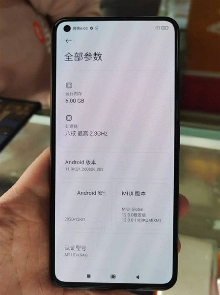

У Мережі з'явилися нові подробиці про майбутнє дешевому флагмані Xiaomi - Mi 11 Lite. Як виявилося,
смартфон отримав екран не гірше, ніж у Mi 11 - це буде матриця OLED останнього покоління E4. Точно такі
ж дисплеї (тільки плоскі) використовуються в нових флагмани Redmi - K40, K40 Pro і K40 Pro +. Різниця
тільки тому, що врізана камера у Mi 11 Lite розміщена в лівому кутку, а в Redmi K40 її місце -
посередині екрану.

Діагональ екрану Mi 11 Lite становить 6,67 дюйма. Дозвіл - Full HD +, а кадрова частота - 120 Гц. Сканера відбитків в дисплеї немає, він розмістився на бічній грані точно так же, як у Redmi K40. Бічна рамка пристрою буде виконана не з металу.
Діагональ екрану Mi 11 Lite становить 6,67 дюйма. Дозвіл - Full HD +, а кадрова частота - 120 Гц. Сканера відбитків в дисплеї немає, він розмістився на бічній грані точно так же, як у Redmi K40. Бічна рамка пристрою буде виконана не з металу.